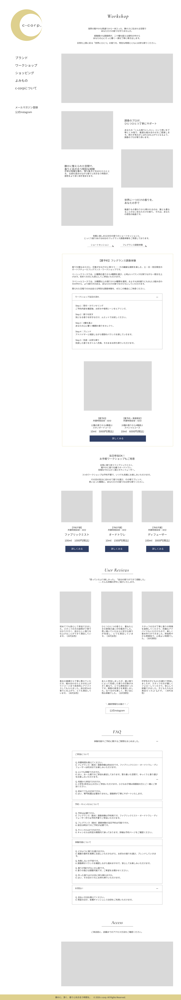
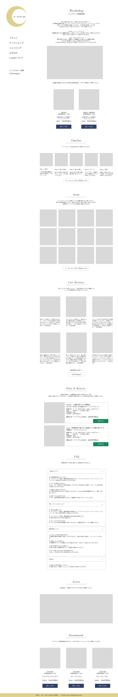
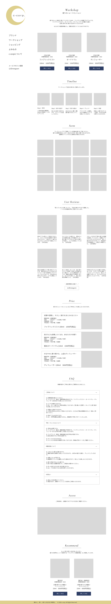

DOCUMENT 03
ワイヤーフレーム
ワイヤーフレーム作成方法
ワイヤーフレーム作成ツール
Figma
ワークショップトップページ
ワイヤーフレーム（PC版）

ワイヤーフレーム（SP版）

配置意図の説明
既存ページで不足していた体験イメージの醸成と情報の集約を目的としたページ。
新規コンテンツとして、ワークショップルームのイメージ、ワークショップの流れ、ユーザーレビュー、FAQを用意。
下層ページ ワイヤーフレーム（PC版）
ワークショップ（フレグランス調香体験）

ワークショップ（香りのショートセッション）

Webアプリケーション画面
Webアプリ画面 ワイヤーフレーム 必須
主要な画面（ログイン・一覧・登録・詳細・編集）のワイヤーフレーム
すでに存在しているメルマガ登録用システムに追加実装する想定のため、割愛。